Little Travel Book, round 2
This round follows your notes: clean and easy to use, with the cuteness in the icons, the little animations and the colours. Every place is its own pin with its category icon, and nothing clusters. Moving the map updates the list, and tapping a pin opens a peek you can swipe through. "My lists / Other lists" switches the source, and Other-list places use the same categories as yours.
All three use the same real data: places from your Google Maps lists with their real categories, and shows from a 19hz.info snapshot of 24 Nov. They differ in layout and in how playful the accents are. Tap the hearts on the phone pages to see the animation.
A · Map first, subtle
Opens on the map · calm accentsShe lands on the map with an Apple-Maps-style sheet, which slides up into the list. It is calm and quiet, with rose saved for hearts and the send button.
Risk: the most "app-like" of the three. The greeting and the charm sit in the sheet, so the first impression is a map.
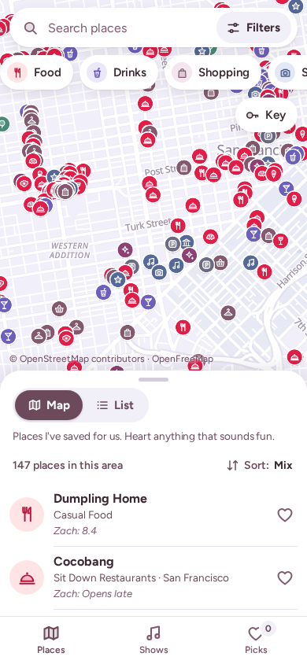
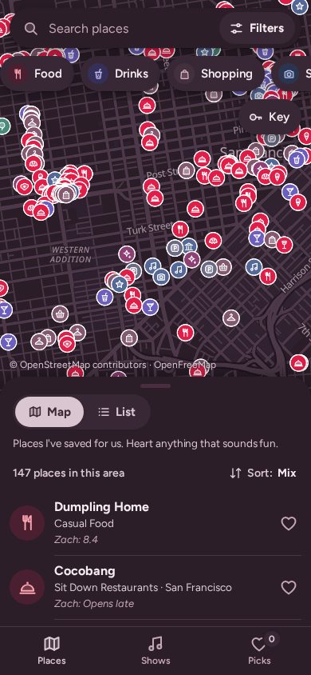
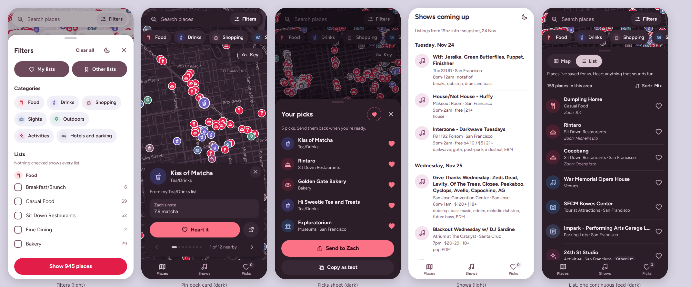
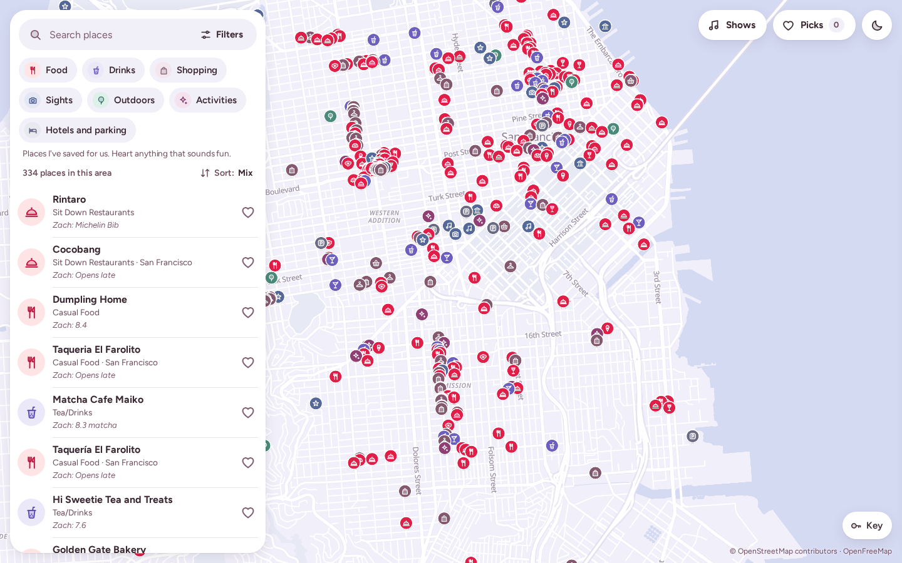
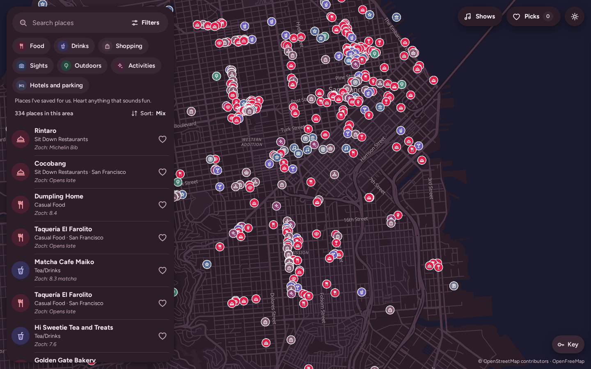
B · List first, playful
Opens on a friendly feed · bouncier accentsShe lands on a warm feed with big icon tiles as quick filters and a floating Map button. Hearts burst into tiny hearts and the picks button wiggles.
Risk: the map is one tap away, so she might not discover it straight away.
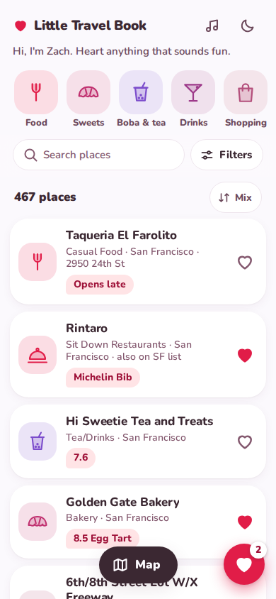
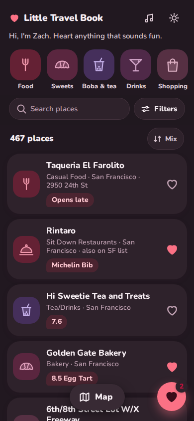
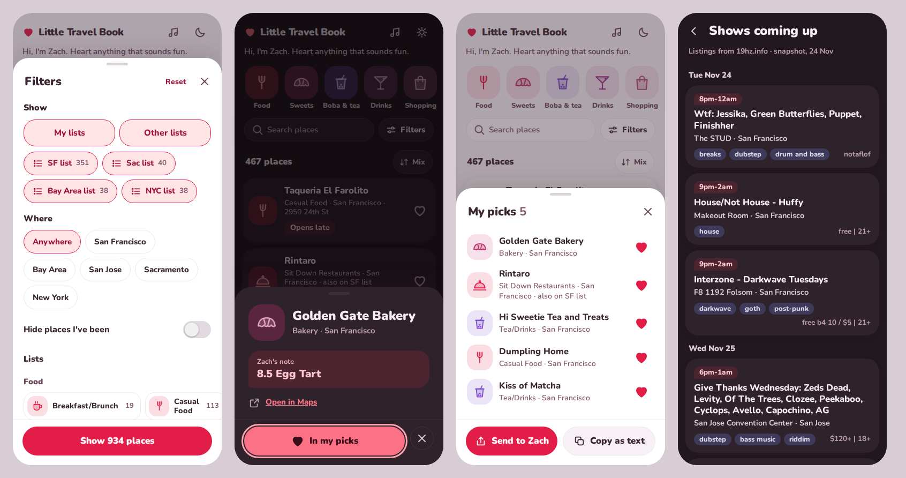
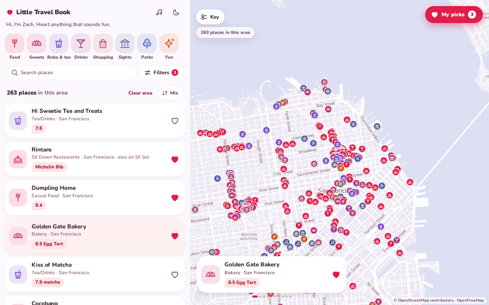
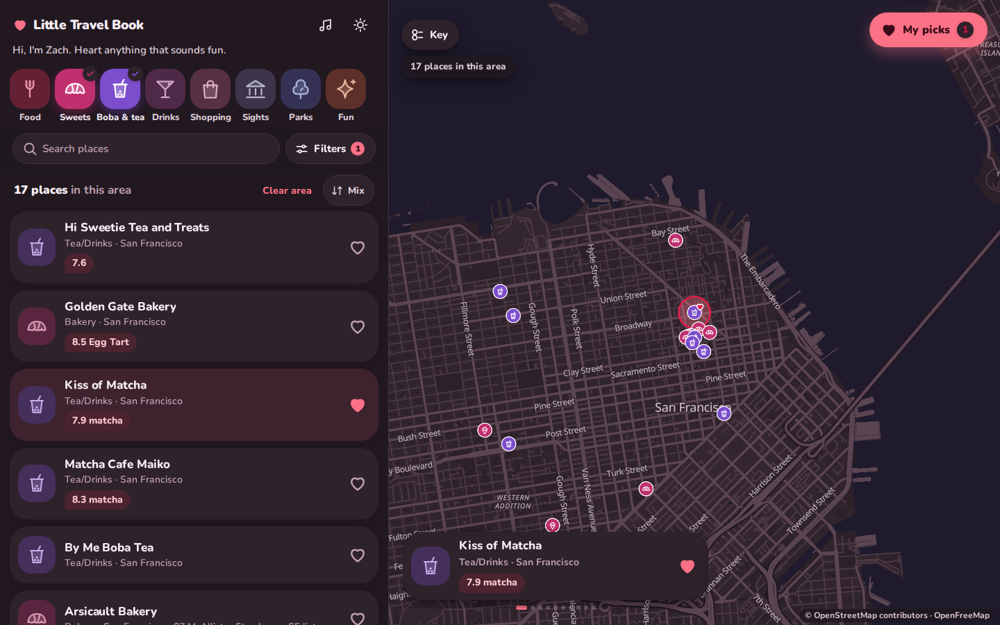
C · Map and list together, tab bar
A map card above the feed · medium accentsA map card sits above the feed and expands to full screen, with Places, Shows and Picks in a tab bar. It shows the map and the list at once, with the accents in between A and B.
Risk: the small map card is crowded until she zooms in or filters.
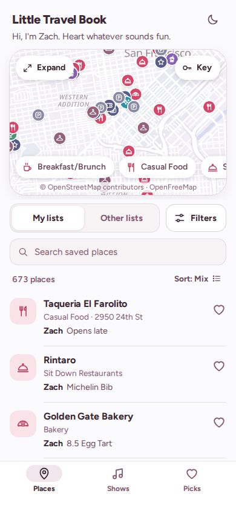
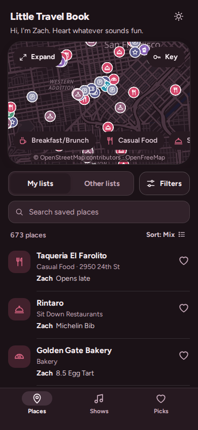
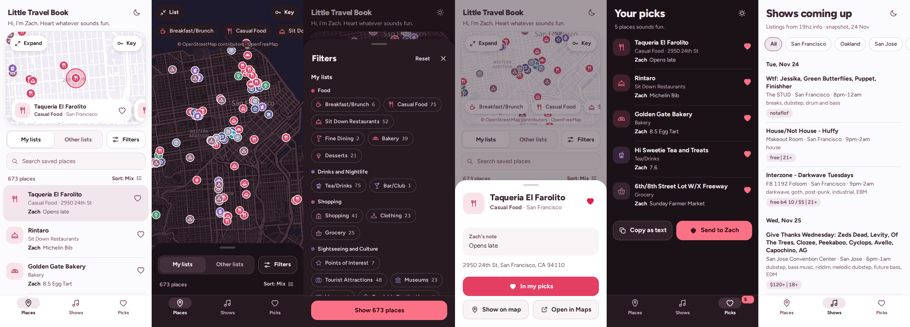
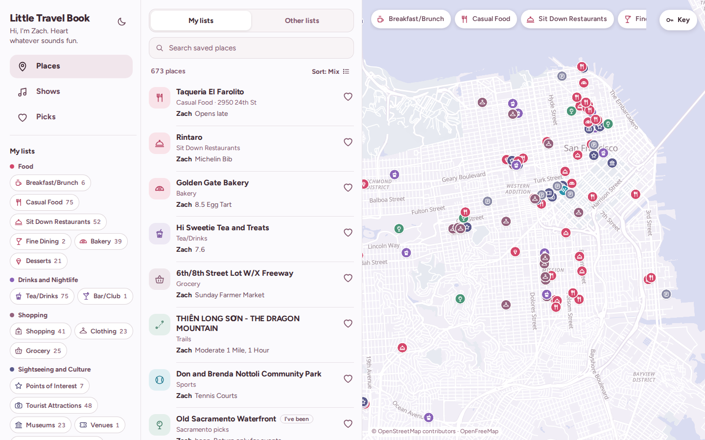
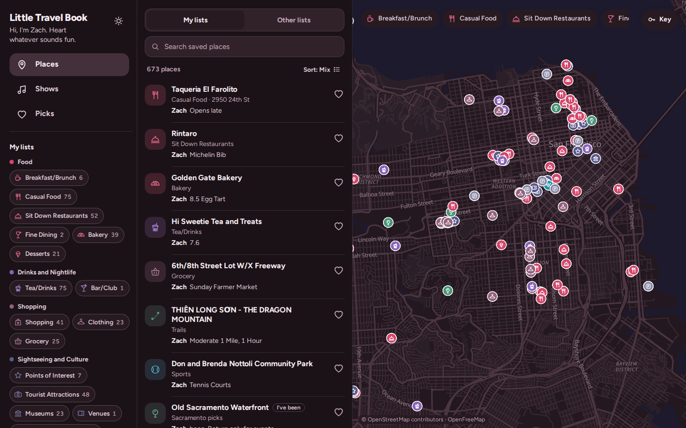
To pick, tell us
- Should she land on the map (A), the list (B), or both at once (C)?
- How playful should the accents be: subtle (A), medium (C) or bouncy (B)?
- Which icon set reads best on the map? Mixing is fine, for example B's icons with C's layout.
- Should picks be a bottom sheet (A, B) or their own tab (C)?
- What should the default feed order be: a mix of categories with your notes first (current), nearest to the map centre, or A to Z?
- Should it open in dark or light?